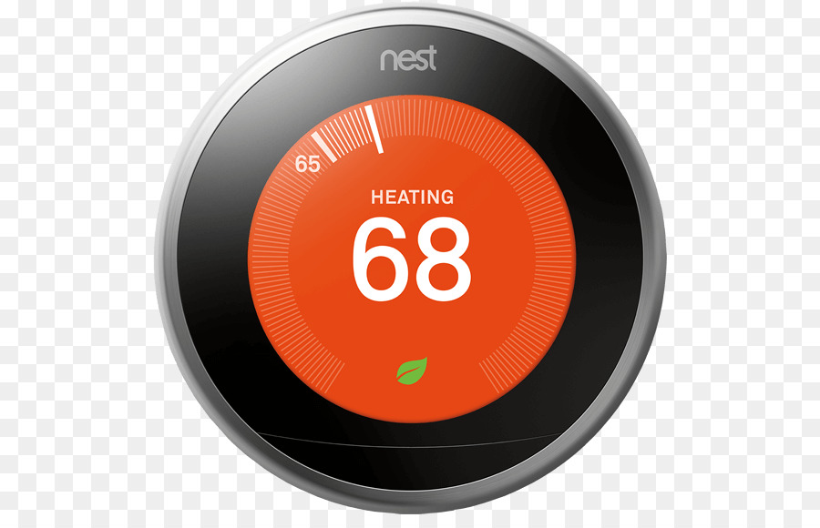

Technologi Collaboration for Software Development
Presented By :
Nover Halomoan
Riko Adrianto Tarigan
Teguh Dana Prayuda
Ijan Panjaitan
Ferdinan Roynaldo
Nest Thermostat
Nest Thermostat
Nest Thermostat adalah sebuah alat yang dapat digunakan untuk menyesuaikan suhu didalam ruangan. kemampuan utama dari alat ini adalah mempelajari dan menyesuaikan jadwal penggunaan AC atau penghangat ruangan oleh pengguna. Nest Thermostat dilengkapi dengan sensor gerak yang mampu mendeteksi keberadaan orang di rumah dan memungkinkan pengaturan temperatur ruangan secara otomatis. Nest juga dilengkapi dengan Wi-Fi yang memungkinkan pengguna untuk mengontrol thermostat tersebut melalui aplikasi smartphone dan tablet. Tombol pada pengaturan di thermostat tersebut akan berubah menjadi merah ketika penghangat ruangan menyala dan biru ketika AC menyala.
Fungsi Nest Thermostat
Kemampuan utama dari Nest Thermostat adalah mempelajari dan menyesuaikan jadwal penggunaan AC atau penghangat ruangan oleh pengguna. Fungsi ini menghilangkan kebutuhan pengguna untuk melakukan pengaturan secara manual dan menurut desainer Nest, thermostat ini akan meningkatkan efisiensi penggunaan energi secara signifikan dibanding thermostat konvensional, karena Nest dibangun agar dapat mempelajari pola kehidupan sehari-hari dalam hal penggunaan energi. Itulah mengapa 99% Nest memiliki jadwal yang bekerja sesuai dengan pemiliknya. Nest akan menampilkan logo daun hijau ketika pengguna memutar tombol ke arah fungsi yang lebih efisien dan membantu mengatur temperatur rumah sesuai keinginan pengguna.
Fitur fitur yang ditawarkan
-
Auto-Away
-
Jadwal Otomatis
-
Time-To-Temp
-
Early-On
-
Dingin hingga Kering
-
Sunblock
-
Gelombang Udara
7
8
9
10
11
12
Ada Pertanyaan??